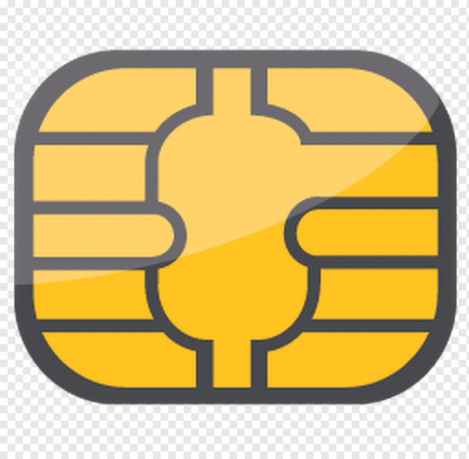

¡BIENVENID@!
VALIDADOR PARA TARJETAS DE CREDITO
VISA O MASTERCARD
NOMBRE
NÚMERO DE TARJETA

XXXX XXXX XXXX XXXXX
NOMBRE USUARIO
Ten en cuenta:
Con este validador estarás segur@ del funcionamiento de tu tarjeta de crédito VISA o MASTERCARD, antes de realizar el pago de tus compras por internet.
¿Cómo usar el validador?
+ Digita tu nombre en el recuadro asignado.
+ Digita el numero de tu tarjeta de crédito en el recuadro asignado, con números del 0 al 9 hasta completar los 16 digitos necesarios para validar correctamente, estos los encuentras en la parte del frente de tu tarjeta.
+ No digites letras, tampoco dejes espacios en blanco, solo ingresa números.
+ El validador automaticamente te dirá si tu tarjeta es VISA o MASTERCARD, además te indicara si es valida o no.